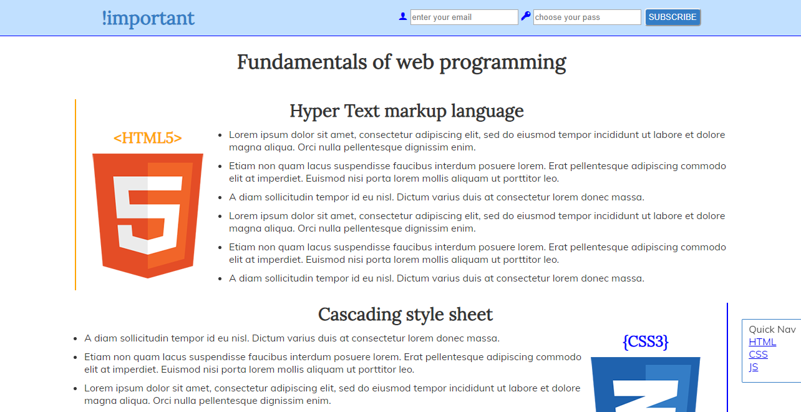
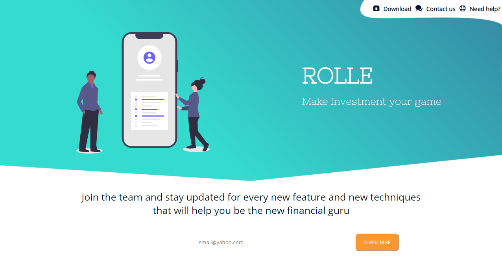
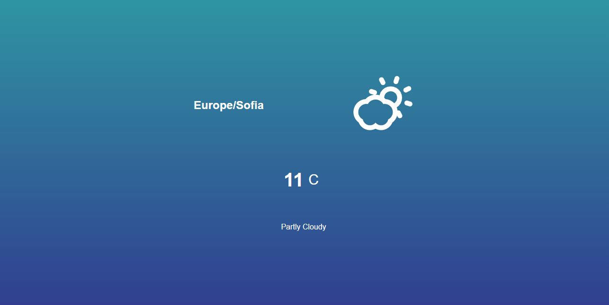

Comming from a small town in Central Bulgaria my main goal always was to live and work in The Big city. I've always had an interest in new stuff but I was affraid to ask how or why. The time I was growing up so were the technologies. Everytime somebody got a computer or a cellphone I was there to see what it looked like and how it worked.
Ever since I was a student I had my mind on technologies and art. The 2nd became my Bachelor degree and later on was time for the main target. Figuring out how can I combine both of my interests was a prior. Attending a Front-end course set the beginning of a long waited journey. Graduating a Software Academy years later gave me the confidence to move forward and the rest is to be written.
The following projects are mostly seeds which will grow with time. Each of them has it's own individual concept and reflects my skills at the time. While learning the basic web technologies I also came across some new softwares and graphic elements. More is to be done and even more to be learned.
Projects
FLASHGUBA - cloud space
As a teenager I was fantasizing for a platform similar to what we know today as OneDrive by Microsoft.I had problem with constantly losing my flashdrives and SD cards and some important data along with it. That's how the idea of such platform poped out in my head and the only thing needed was a device such as PC or cellphone with internet to reach all your files. Not knowing what it really takes to build such app I was amazed of how writting small lines of code can make your browser show what you want. That was my comming back to Technologies after years of LIFE.
Web Technologies

This page came to live during my attendance the Software Academy I graduated. It is the result of new ways of coding and good practices I learned there. Thanks to my tutors I'm still earning to learn more and do more.
ROLLE - Make Investment your game

On this page I'm experimenting the new trends in Web Design. Considering the typography, content such as text, graphics and white space, responsiveness with queries and etc. Work in progress.
Weather Application

In the academy I learned a lot about JavaScript but I was far from calling myself a confident programmer. I learned about variables,hoisting, OOP and how to manipulate my HMTL and CSS with JavaScript, how to 'listen' for events and how to play with them but it is not enough to understand what the language can do. I made this app with online help and it showed me a whole new area of programming. Comming across with actual use of an API and unite it with my knowledge and understanding only increases my thirst for more.